Making. Learning. Growing. Together.
APR 2025 - MAR 2026A year of deeper community roots, a busier maker space, and 1,600+ learners who got their hands dirty building, coding, soldering, and creating.
Download PDF ↓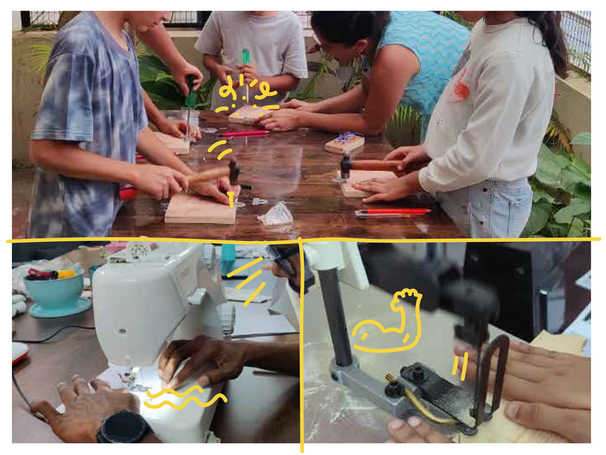
Create a new generation of students with a mindset to experiment and be curious to pursue STEM education.
We provide students access to STEM based learning modules in the form of resource materials, classes, curricula, and equipment. We do this through project based learning by working with teachers and students - ultimately helping them make an informed choice about their future.
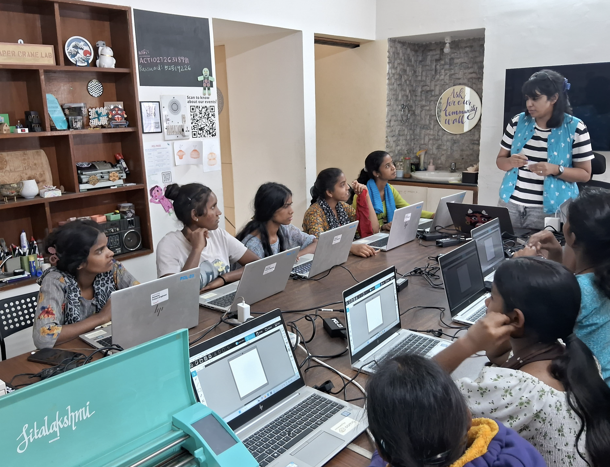
Hello again! It has been yet another incredible year at Paper Crane Lab - one filled with new communities, deeper partnerships, and meaningful making.
Every year at PCL has had its own quiet focus. This year, from April 2025 to March 2026, ours was on strengthening our communities and streamlining our programs so that each one could get the attention it deserves. In practice, that meant doubling down on the programming at our maker space, while making sure our outreach efforts grew right alongside it - not at its expense.
With the support of our funders and this wonderful community, we've managed to do exactly that with programs like "Computer skilling via making" in Hasirudala. The numbers below tell the story of how our programs have grown over the last four years - numbers we're genuinely proud of, and hungry to build on further.
This year also gave us the chance to run a couple of long-term outreach programs instead of many short one-off sessions. That shift has deepened our access within these communities and let us work at a level of detail that shorter engagements simply don't allow.
Looking ahead, our focus for the coming year is to make our outreach programs even stronger, and our makerspace offering more diverse. Here's to the next year - and to watching these numbers grow further.
Thank you for your continued support. Happy Making!
From a small set of school visits in 2022 to over 200 programs a year - here's how PCL has grown.
| Year | Events | Learners | Lab Sessions | Outreach Sessions | Outreach Partners |
|---|---|---|---|---|---|
| 2022 (Jan-Dec) | 17 | 754 | 5 | 12 | 4 |
| 2023 (Jan-Dec) | 37 | 1,280 | 26 | 25 | 8 |
| Jan 2024 - Mar 2025 | 205 | 1,794 | 183 | 87 | 10 |
| 2025-26 (Apr-Mar) | 224 | 1,642+ | 153 | 66 | 10+ |
This year, PCL deepened and expanded its outreach across six key programs - bringing hands-on, joyful learning to communities in Bengaluru and beyond. From a multi-month science and math program at a government school, to computer literacy for domestic workers, to a citywide science fair - each initiative reflected our belief that STEM education is for everyone.
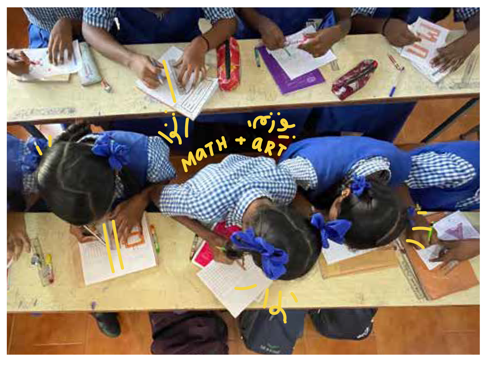
Our long-running partnership with Resurrection School continued through 2025-26. Over the course of the year, we ran multiple sessions with Grade 8 and Grade 9 students, covering topics such as paper circuits, angles on paper, pull-up geometric nets, zine-making, hula hoops for measurement, and more. Supported through a Goodera partnership, we also ran a special Doodle Bot session for 60 students.
We continued our multi-session partnership with Hasiru Dala's Buguri libraries across two sites - Jyotipura and BSK (Banashankari). At BSK, we ran a 6-session computer science program alongside a 6-module paper engineering, equipping young workers with digital and maker skills. At Jyotipura, we ran a computer literacy program where they learnt how to design and print files using the 3D pronter, laser cutter, and vinyl cutter. All sessions were conducted by dedicated PCL facilitators and held at the Buguri library or Paper Crane Lab.
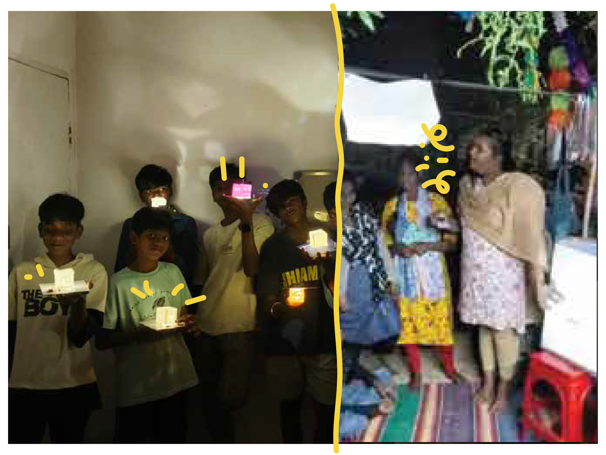
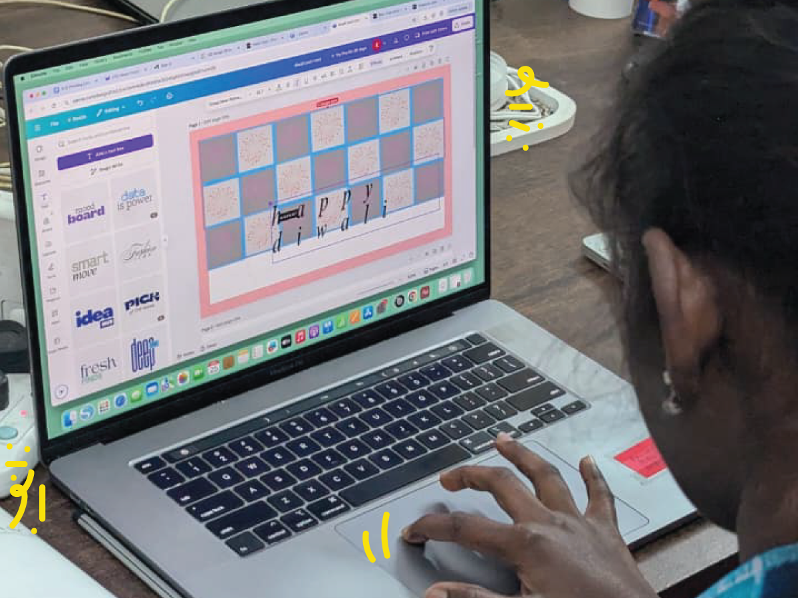
In partnership with WeLive, PCL conducted a multi-session computer literacy programs for students who had just joined WeLive. Over 9 sessions across two batches (the second batch running in March 2026), participants learned essential digital skills: Gmail, Google Docs, spreadsheets, and professional tools like LinkedIn and Internshala. The classes were designed to be practical and accessible, with facilitators communicating in a mix of English and Hindi.
PCL continued its electronics curriculum partnership with Clarke School for the Deaf in Chennai. Sessions were held regularly throughout the year, covering fundamentals of electronics - resistors, potentiometers, multimeters, breadboard circuits, and water-level sensors. A key development this year was aligning the curriculum with the LEAN (5S) model for learners with intellectual disabilities, adding visual aids and adapted instruction formats.
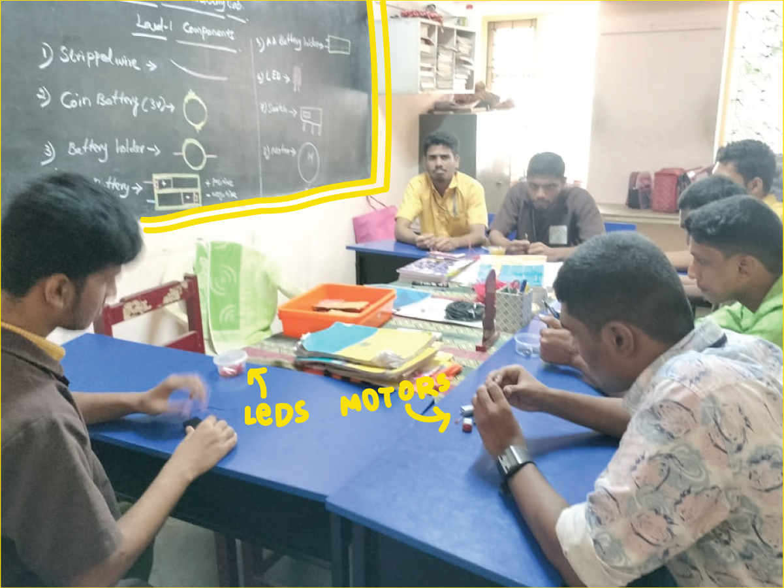
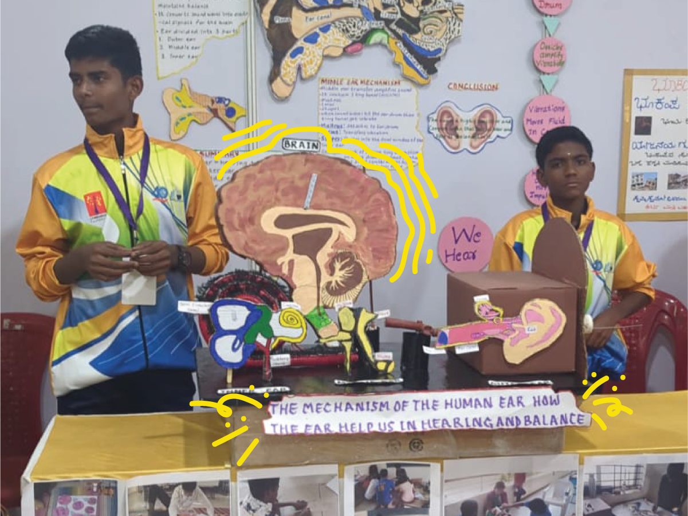
ILAP is a science and arts exhibition competition organised by the Quizabled Foundation, designed exclusively for children and youth with disabilities. Students with intellectual disabilities, hearing impairments, and other learning differences develop and present original projects, building skills in critical thinking, creativity, and communication. PCL mentored nine teams from Karnataka special schools over three weeks as they prepared for the finals. Support ranged from hands-on technical help to helping students refine their presentations. By finals day, all nine teams successfully presented their projects. Judging was by Jyoti Mehra and Soorya Hariharan.
PCL expanded its outreach geography this year with two visits to Ramnagara, conducting a 3D Printing Workshop and a STEM course for a cohort of 60 students each. A 2-session 3D Printing workshop was also run for Cograd, reaching another 60 participants. These programs introduced students from outside Bengaluru to fabrication technologies and design thinking.
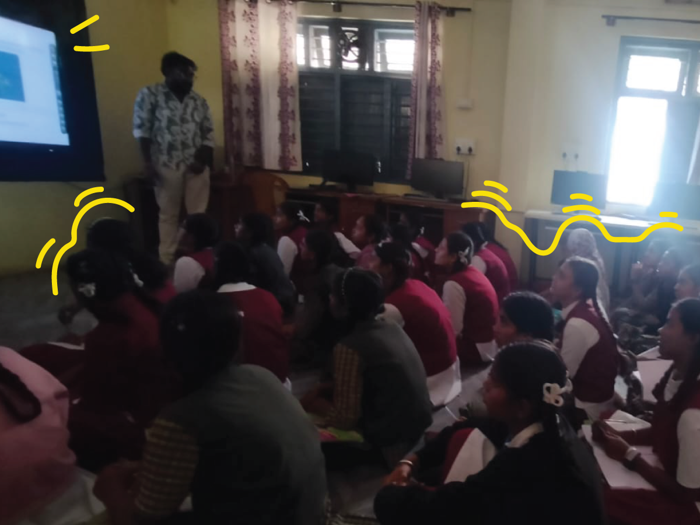
A place where curious minds of all ages came together to make, tinker, and explore. This year, we ran over 110 internal workshop sessions and 36 external workshops, spanning a diverse range of disciplines.
The PCL Pass gave dedicated makers open access to our equipment between workshops, including the laser cutter, 3D printer, scroll saw, soldering station, woodworking tools, and leather cutting tools. Notable pass users included professionals on personal projects, architecture students, artists, and repeat tinkerers who became part of the PCL community.
| Category | Workshop Types | Sessions |
|---|---|---|
| Technology & Fabrication | 3D Printing, Laser Cutting, NFC, Arduino, Soldering, Fusion 360 | 28 |
| Art, Craft & Printmaking | Zine Making, Cyanotype, Vinyl Cutting, Origami, Pop-up Paper, String Art | 19 |
| Hands-on Making | Woodworking, Kinetic Sculptures, Camera Obscura, Infinity Mirror, Toys from Trash | 11 |
| Design & Creative Skills | Sewing, Crocheting, Mending, Graphic Design | 5 |
| Coding & Interactive Media | Creative Coding, React/Web Dev, TouchDesigner, Vibe Coding, Code Walks | 14 |
| Community & Engagement | Bubble Beats/DIY Instruments, Audio Meetups, Book Clubs, Open Houses | 12 |
| Programs & Clubs | Summer Camps, STEM Club Sessions | 22 |
Learning outcome: To introduce students to digital design and fabrication tools through hands-on making activities.
Engagement: Our collaboration with PEP School involved a four-day workshop series focused on introducing students to digital fabrication through vinyl cutting and design.
Students began by learning to use design software and understanding how digital measurements translate into physical outputs. They created simple stickers, learned how to prepare materials, operate the machine, and apply their designs to everyday objects such as notebooks and laptops.
Learning outcome: To give young makers hands-on experience with core fabrication and making tools through a sustained after-school program.
Engagement: The STEM Club ran as a three-month recurring Thursday class for students aged 10-12. Across the program, participants explored 3D printing, vinyl cutting, laser cutting, woodworking, and creative coding.
It offered a welcoming space for continued learning and experimentation, giving students the chance to build confidence through regular, guided making sessions.
The Lab also welcomed a range of communities throughout the year. Here are four examples:
In 2025, an audio enthusiast community held several meetups at the Lab, sharing builds, swapping ideas, and exploring circuits and sound in a space built around hands-on making.
In 2025, CC Sante, a community gathering for creative coders and tech enthusiasts, used the Lab as a venue for both in-person and online meetups.
In November 2025, the VizChitra team brought their MicroMapping project to PCL, documenting and mapping the trees of Indiranagar through a community data-visualisation workshop.
From February to March 2026, Sri and Divya facilitated five woodworking sessions in which participants built joints, bookends, and their own projects using the Lab's tools.
Some of the most memorable moments from the Lab in 2025-26:
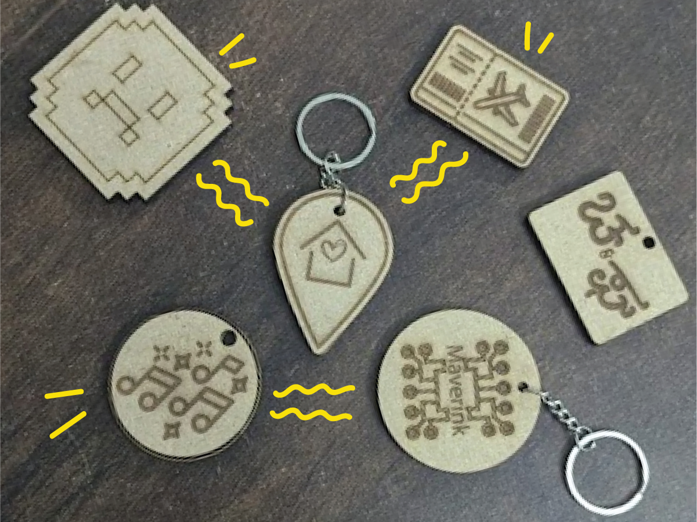
Participants made NFC-enabled keychains linking to Instagram, LinkedIn, and even a sad poem generator. A full house of 9 made the Sankranti edition a memorable success.
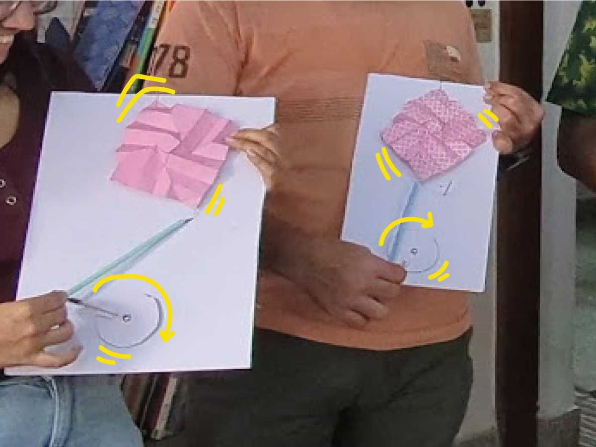
A Valentine's Day workshop became a flower-making session as participants chose pinks and purples for their origami-powered sculptures.
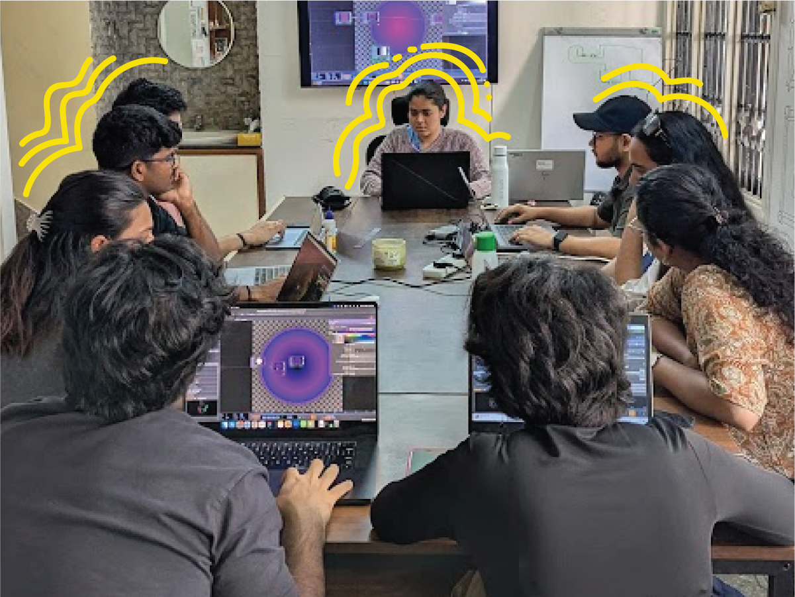
Participants discovered a new community around generative visuals. Facilitator Diya runs these sold-out sessions every other month at PCL
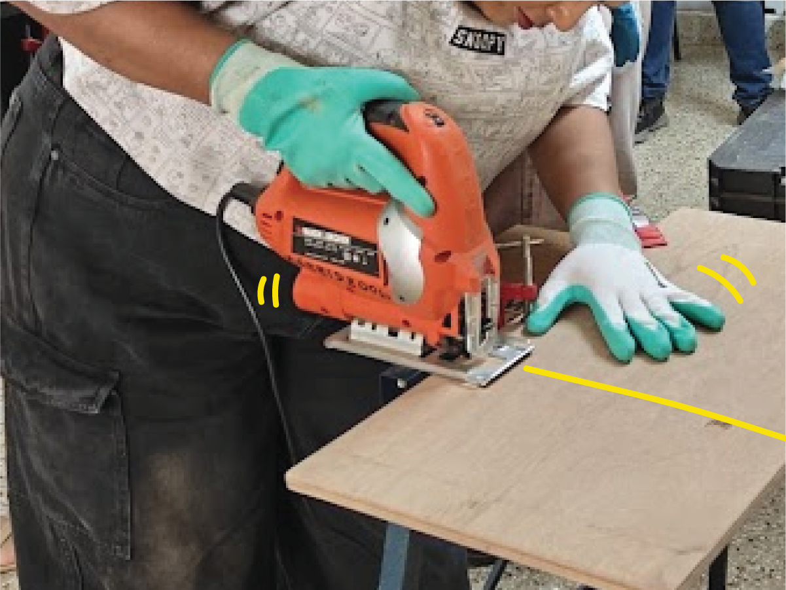
Sri and Divya led five sessions of a growing woodworking program, with participants building joints, bookends, and their own projects.
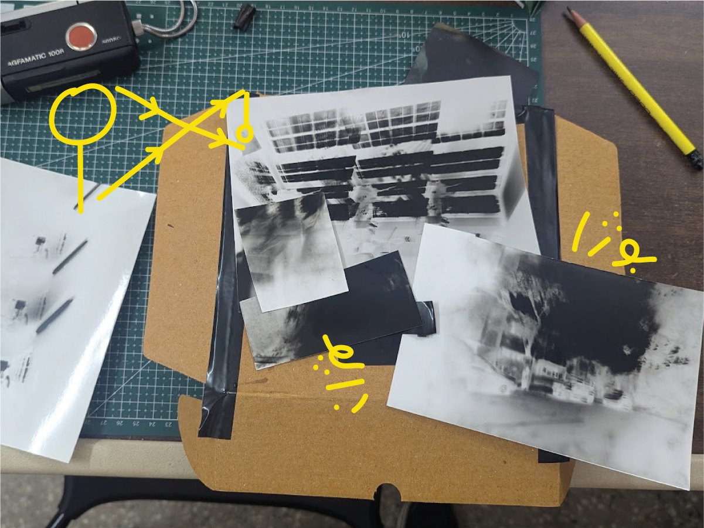
A sold-out workshop facilitated by Stuti brought the magic of pinhole optics to curious makers.
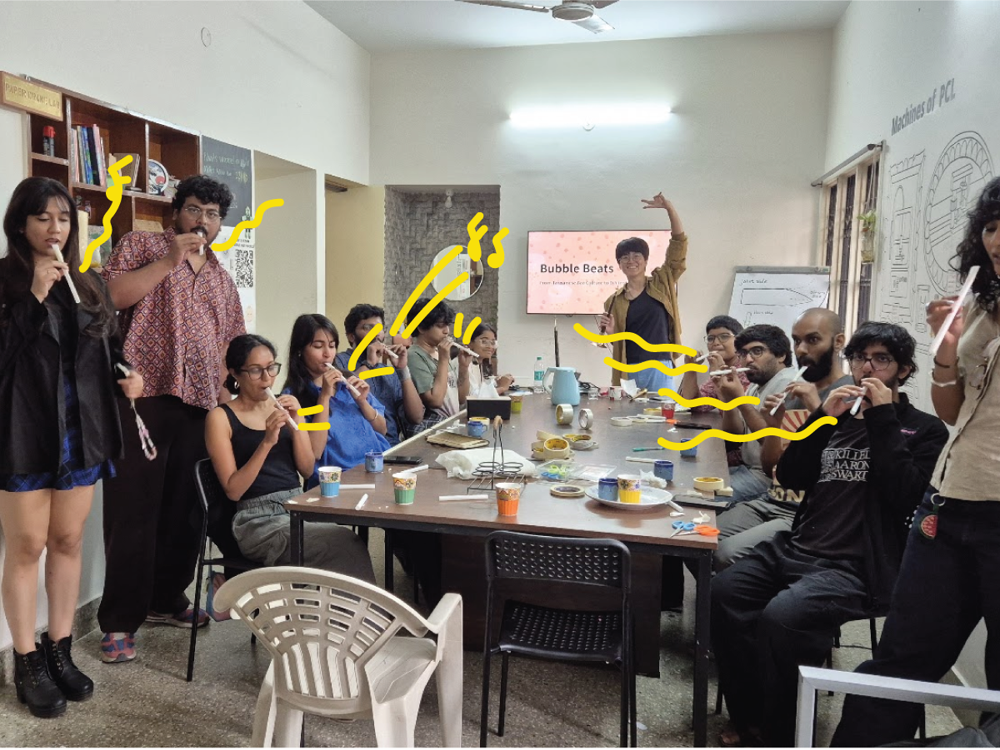
Ya-Nung led two sessions of bubble beats, including a homeschooler edition, making music-making accessible and inventive.
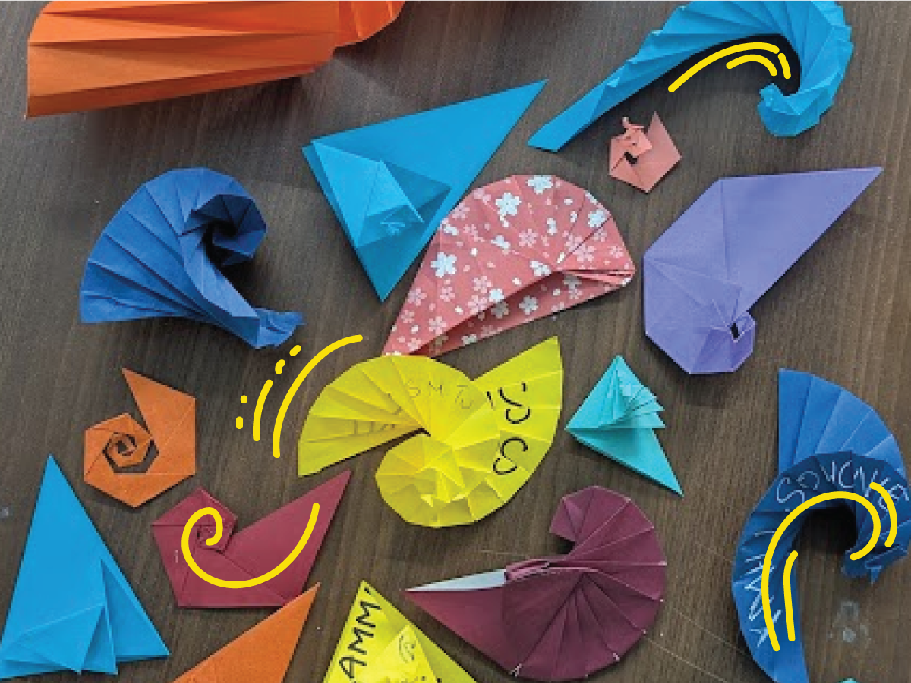
DNA spirals, triangle variations, and flashers turned a folding evening into a calm, music-filled gathering of women makers.
We ran the Vibe Coding workshop ourselves at PCL, bringing together lawyers, architects, and other curious participants for a playful introduction to AI and vibe coding.
Paper Crane Lab is powered by a dedicated team who bring energy, expertise, and heart to every session.
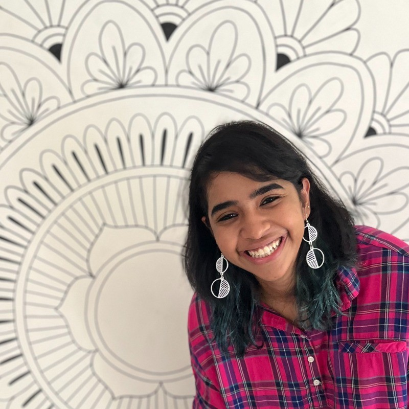
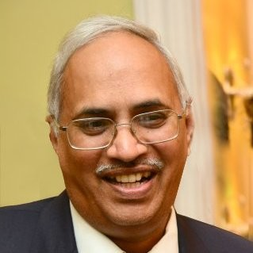
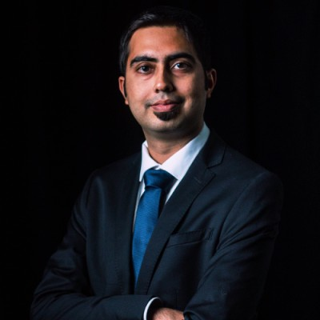
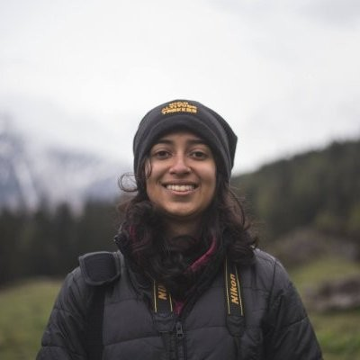
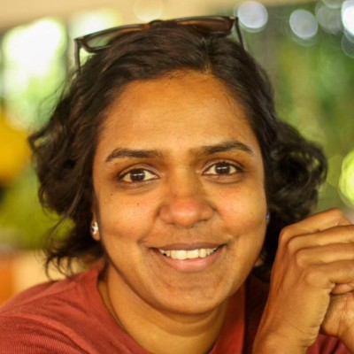
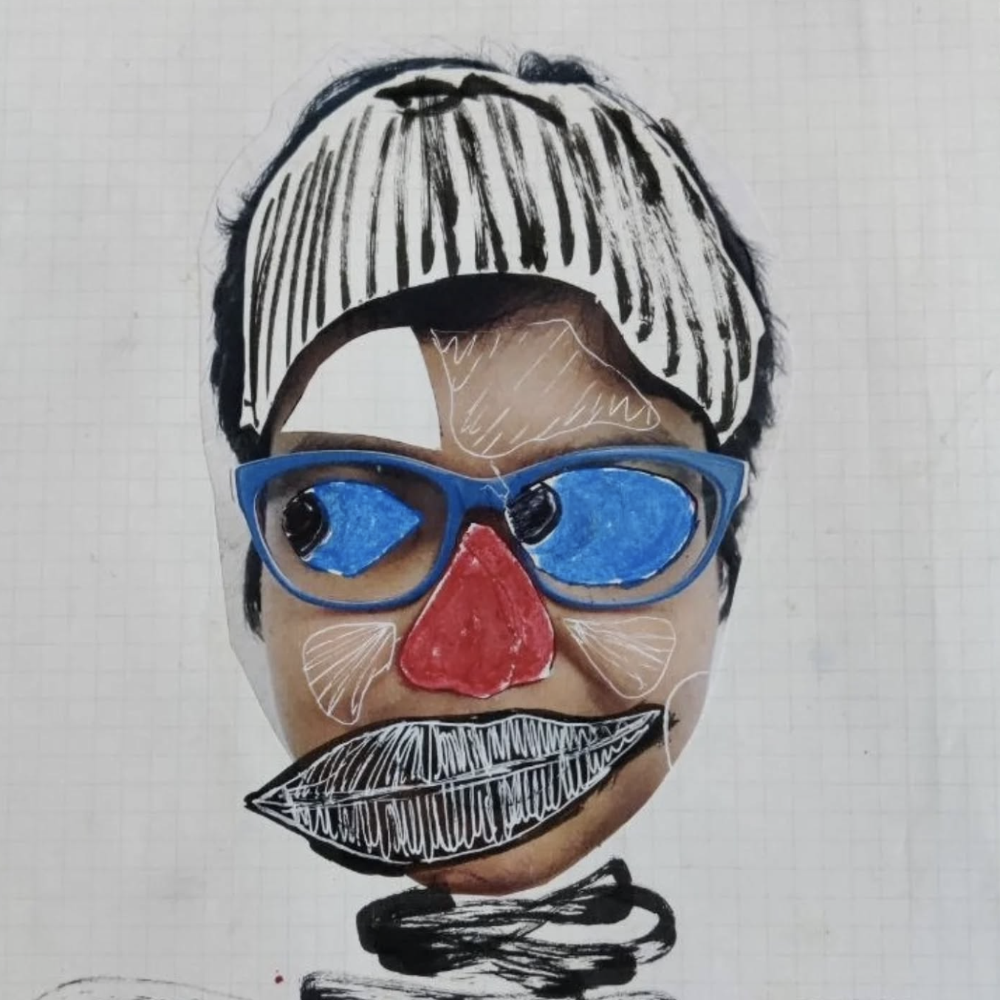
We are grateful to the organizations and communities that partnered with us this year to extend PCL's reach and impact.
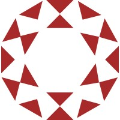
Makerspace supported by Samāgata Foundation